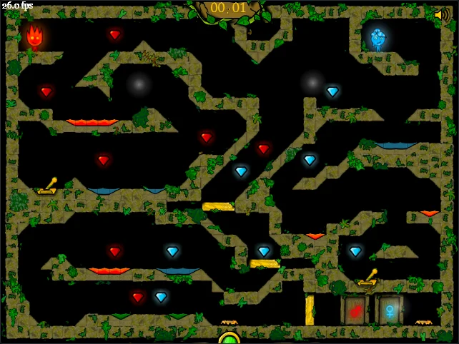
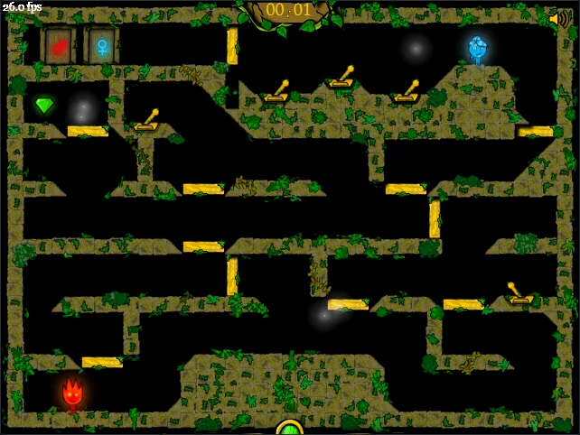
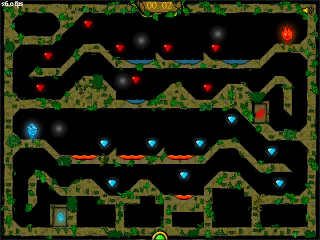
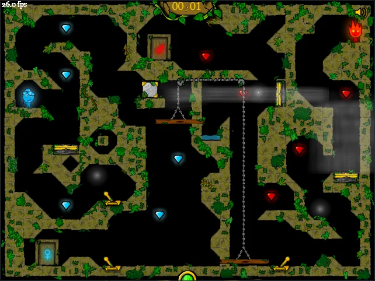

03 · ANIMATION
The exit door
Twenty-two frames of the door lifting on its stair. Every eighth-of-a-second of it is still vector art.
Recovery
There was no source code. Every level, sprite and sound here came out of one compiled Flash file from 2009, and the physics was ported line by line from the bytecode inside it.
# Fireboy & Watergirl - The Forest Temple.swf format CWS v9, 1,855,972 bytes levels 32 adventure 17 · puzzle 9 · speed 6 sprites 268 shapes 460 · fonts 5 sounds 17 classes 220 ActionScript 3, ported to TypeScript # verified ✓ all 32 levels pinned by digest ✓ 640,000 frames of soak, run twice, identical
The first sixteen bytes of that file already say what it is:
CWS
9
2,352,810
zlib
…the game
What was inside
Each entry is the real thing, extracted and redrawn, not a recreation.




Adventure 17, puzzle 9, speed 6. Each tile grid was decoded on its own and then checked against the collision shapes the engine builds from it.
Eight drawn frames each, played at the game's 26 frames per second. Two of 268 sprites and 460 vector shapes.
Twenty-two frames of the door lifting on its stair. Every eighth-of-a-second of it is still vector art.
Real waveforms of four of them, drawn from the extracted audio.
// Game.as, decompiled m_level = new level(_loc3_, param2); trace("COOL"); m_level.scaleX = 0.8; m_level.scaleY = 0.8; m_level.x += 16; m_level.y += 16;
Ported line by line to TypeScript. 39 tiles × 20 px × 0.8 + 16 = 640: the stage size falls straight out of the original.
Named here, not shipped: they are licensed faces, so the rebuilt interface uses the reader's own system font and keeps the originals inside the game.

The menu's backdrop: rows of paired doors, fire and water, which is the whole game in one picture.
The tools
Python that runs once and is not part of any build. Where it mattered, two independent readers had to agree.
swfabc.py, disasm.py: the ActionScript bytecode's constant pool, classes and method bodies, and their operand shapes.extract_levels.py walks the if/else chain that builds each level, and is cross-checked against parse_source_levels.py, an independent path through the decompiled source.export_assets.py: every sprite as PNG and SVG, the 17 sounds, the 35 text fields and the button states.as3_to_ts.py, gen_game.py: Box2DFlash 2.0.2 and the game's own classes, transliterated into TypeScript the engine compiles.